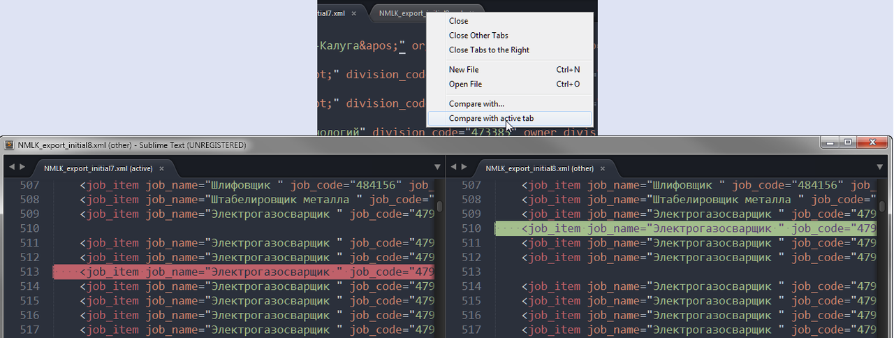

Comparing the contents of two files in Sublime Text
I have two cloned repositories of two very similar open-source projects, which I have been working on in different instances in Sublime Text 2 to arrive at my desired result. Code from both of these projects was used. I have been using Git as version control for my project, but have not included the original projects. Thus, I would like to be able to quickly compare the contents of two files of the original project and compare the differences between them and my project.
I was hoping that Sublime Text 2 would have a "Compare File" feature, but I can't seem to find anything related to it in the settings or online. A third- party ST2 package to accomplish this task would also work well. Is such a task possible to do within the ST2 text editor?
Answer
You can actually compare files natively right in Sublime Text.
- Navigate to the folder containing them through
Open Folder...or in a project - Select the two files (ie, by holding
Ctrlon Windows or⌘on macOS) you want to compare in the sidebar - Right click and select the
Diff files...option.

Suggest
Compare Side-By-Side looks like the most convenient to me though it's not the most popular:

UPD: I need to add that this plugin can freeze ST while comparing big files. It is certainly not the best decision if you are going to compare large texts.